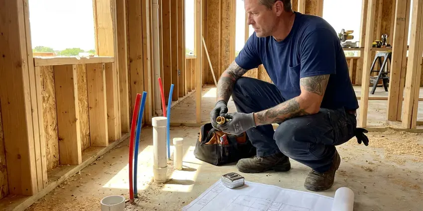

Rooter Services in Virginia Beach, VA
FBN Plumbing handles rooter work in Virginia Beach, VA from a bathroom sink trap all the way out to the street connection.
- Camera Checks on Request
- Flat Pricing
- Work Guaranteed
- Fast Drain Clearing

Clear Roots and Grease With Commercial Rooter Service in Virginia Beach, VA.
A rooter technician can be at your door today with augers sized for anything from a 1.5 inch trap to a 6 inch main.
Virginia Beach, VA Rooter Service for Stubborn Clogs
FBN Plumbing starts every rooter call in Virginia Beach, VA by asking which fixtures are slow and where the cleanout is. That tells us branch or main. Then we clear it, check what came back on the cable, and tell you if the cause was debris, something flushed, or a defect in the pipe.
Work we handle every week:
- Sewer Lateral Root Removal
- Follow-up jetting and camera checks when needed
- Root saw and spiral cutter heads for sewer lines

Additional Plumbing Maintenance Services in Virginia Beach, VA
Our maintenance and specialty plumbing services in Virginia Beach, VA catch small problems before they become emergencies.


Customers
Why Choose FBN Plumbing for Rooter Services in Virginia Beach, VA?
Every technician is trained on clay, cast iron, ABS and PVC drain lines. Each one needs its own cutter and its own feel on the machine. The wrong blade can crack a clay joint.
- Pipe Protection, Rental machines kink and gouge. We control speed and feed so the pipe comes through intact.
- Heavy Equipment, Commercial rooter machines clear roots that rental units cannot.
- Nights and Weekends, Sewers back up at bad hours. FBN Plumbing takes evening and weekend rooter calls.
Citywide Coverage
Every neighborhood in Virginia Beach is in our area, from older blocks with cast iron mains to new construction with PVC. The pipe material decides the cutter. Our trucks carry cable long enough to reach the tap from most cleanouts, which means the full line gets cut.
Experienced Team
Our rooter techs spend their days clearing drains and sewers. Root intrusion is familiar ground. They also know how to cut those roots back cleanly to the pipe wall without scoring the inside of older pipe.
Safety-First Approach
Rooter machines put out a lot of torque. They wear cable gloves and run the machine on a foot pedal that cuts power when released. We follow Virginia Beach and state plumbing code on any cleanout we open, so the cap goes back gas-tight. Drop cloths go down first.
Trusted Certified Virginia Beach Plumbing Services Professionals
At FBN Plumbing, we are proud to offer certified plumbing services throughout Virginia Beach, VA. Those papers on the wall mean something. Our plumbers hold recognized industry credentials, and they follow strict safety and quality rules on every repair, installation and maintenance call we run.
Call Us Now PHCC Plumbing Contractor Recognition
PHCC Plumbing Contractor Recognition Better Business Bureau (BBB) Accreditation
Better Business Bureau (BBB) Accreditation Angi Certified Pro
Angi Certified Pro ISO 9001 Quality Management Certification
ISO 9001 Quality Management CertificationRooter Work Done Right in Virginia Beach, VA
Sewer Root Removal in Virginia Beach
Roots cause more main sewer clogs than anything else on older streets. They enter through tiny gaps in clay and cast iron joints and grow into thick mats that catch everything flowing past. We cut them back with a root saw on a heavy cable. Most of these lines need cutting every year or two.

Commercial Rooter Service in Virginia Beach
Restaurants, apartment buildings, schools and offices load their drains all day. We root larger mains, kitchen waste lines and floor drains with commercial machines and heavier cable than any house call would need. Maintenance plans cut emergency calls. After-hours work keeps the noise away from tenants and customers.
Main Line Rooter Service Through Cleanouts in Virginia Beach, VA
A cleanout is a capped pipe that gives us a straight shot into the main. From the cleanout we run cable all the way to the city tap, which clears the full length of the line. We can add a cleanout if there is none. We flow test with running water when the cable comes out.
Commercial Rooter Services in Virginia Beach, VA
Restaurant floor drains and grease lines in Virginia Beach, VA take a beating. FBN Plumbing roots commercial kitchen lines, restroom batteries and office stacks with machines built for 4 inch and larger pipe. A closed kitchen loses money every hour. We work around your hours and can put the line on a cleaning schedule so it gets cut before it stops up.
Clog Prevention & Maintenance in Virginia Beach, VA
Grease belongs in a can, not the sink. Even wipes labeled flushable hold together long enough to snag in a sewer. FBN Plumbing can recommend strainers, a cleanout where one is missing, and a rooting schedule for your Virginia Beach, VA home based on what we pulled out last time. Simple changes help a lot.
Rooter Plus Hydro Jetting in Virginia Beach
A cable cuts roots, and a jetter washes out what is left. The pair clears dense roots and old grease better than either tool alone. We camera the line first. This combination is common for restaurants and for homes where the same line plugs every year, usually from roots at one bad joint.
Residential Rooter Services in Virginia Beach
Kitchen sinks plug with grease, and bathroom lines plug with hair and soap scum. The cable gets matched to the drain, a light 1/4 inch for a bathroom sink and a heavier 3/8 inch for a kitchen run. Hand augers handle the small stuff. If the same drain keeps stopping up in your Virginia Beach home, we will tell you why and what fitting or habit change keeps it open.

Scheduled Drain Maintenance in Virginia Beach, VA
Some lines need cutting on a calendar. A house with a big oak near the sewer might need rooting every 12 to 18 months. FBN Plumbing can put your Virginia Beach, VA property on a schedule and send a reminder when the next visit comes up. Cutting a line before it stops costs less than an after-hours backup and keeps sewage off your floor.
Local Rooter Crews Near Me in Virginia Beach, VA
Close by matters most when sewage is coming up a floor drain. FBN Plumbing serves Virginia Beach, VA and the surrounding towns with rooter crews who know local sewer layouts. Response times stay short. We also know where the city connection usually sits on these lots, which helps us run cable the full distance without guessing.
Our rooter trucks are based nearby, so we can respond fast when drains back up. Each one carries cable, cutters and jetting gear. That setup means most lines in Virginia Beach get cleared in a single trip, with no return visit for heavier equipment.
FBN Plumbing at a Glance
- Licensed and insured plumbers serving Virginia Beach, VA
- 24/7 emergency service with same-day scheduling
- Upfront, flat-rate pricing before work begins
- 4.9-star rated by 798+ Virginia customers
Virginia Beach Map
Virginia Beach Information
- Population
- 453,649
- Area codes
- 757/910/252
- Service area
- Virginia Beach and towns within a 40 mile drive
- Nearby
- Norfolk, Chesapeake, Portsmouth, Hampton
A mature shade tree can send hair-fine roots through a joint gap and fill a 4 inch sewer in a couple of seasons, which is why regular rooting keeps Virginia Beach drains moving.
Expert Services
Call FBN Plumbing for reliable plumbing work done by licensed pros in Virginia Beach, VA.
Our Specialized Plumbing Services in Virginia Beach, VA
At FBN Plumbing, we handle the full list of plumbing services across Virginia Beach, VA. We go from leak detection all the way to full system installations, for homes and commercial buildings, and we do it quickly at a fair price. Take a look at our core services below:


Our Rooter Routine in Virginia Beach, VA
Most rooter calls follow the same three steps, and most finish in a couple of hours.
Schedule
Call (434) 230-6997 to book rooter service. Our office asks a few questions about the problem and sends a tech to your Virginia Beach property.
Assess
The tech checks which fixtures are affected and may run a camera to pinpoint the cause and the exact spot of the clog.
Clear It
Using drum or sectional augers, or a jetter, we clear the line to the pipe wall and restore normal flow.
Frequently Asked Questions About Rooter Services in Virginia Beach
Rooting a sink, tub or toilet typically runs $125 to $300. Main sewer rooting through a cleanout generally runs $200 to $500. With hydro jetting added, expect roughly $450 to $1,000, depending on how long the line is and how heavy the grease is. After-hours calls cost more.
A limited guarantee for a set number of days comes with most rooter work. If the line clogs again within that time, we return at no extra charge.
Yes, most rooter jobs come with a limited guarantee. The terms depend on the line and what we found, and they are written on your estimate. Roots get handled differently. Broken pipe or heavy roots can shorten the guarantee because the roots keep coming back until the pipe is repaired.
Drain snaking, also called augering, uses a flexible cable and cutting head to break up or pull out the clog. It works well on hair, wipes and roots. Hydro jetting washes the entire inside of the pipe with high-pressure water, removing grease, scale and sludge the cable leaves on the walls. Repeat clogs usually need jetting.
Sewer pipes leak a little water vapor at the joints. Roots follow that moisture to the gap and push in. Once in, they grow quickly. In Virginia Beach, clay pipe with a joint every 2 to 3 feet and older cast iron with oakum joints are the most common targets.
Rental machines are easy to get, but they are dangerous in untrained hands. Cables can kink, whip and wrap around a wrist in a second. They also get stuck. A rental cable stuck in an old clay line can turn a $300 rooter call into a dig to retrieve it.
Slow drains, gurgling pipes and sewer smell are the early ones. If the tub fills when the toilet flushes, the main is blocked. That one needs a call. Several fixtures acting up at once almost always points to a main line clog rather than a single trap under one sink.
It can be, so we prepare for it. Drop cloths go down from the door to the work area, and we keep buckets and rags at the cleanout. The cable comes back dirty. It gets wiped as it comes out, and debris goes into bags before we clean up and leave.
Hear From Customers Who Hired Our Plumbing Experts

Karen W.
After our third pinhole leak in copper, we stopped patching. FBN Plumbing gave us a written plan room by room and repiped the house in PEX while we stayed in it. The crew covered our floors every morning and cleaned up every night.
Repiping · Virginia Beach, VA
Paul B.
Our pit pump ran nonstop even in dry weather. The plumber found the check valve was stuck open, so the same water kept cycling back into the pit. New valve, new float switch, done in an hour. It runs quiet now.
Sump Pump · Hampton, VABrian W.
I smelled gas behind the dryer and called right away. The plumber found a corroded flex connector, replaced it, and pressure tested the whole line before turning the gas back on. He let me watch the gauge hold steady for fifteen minutes.
Gas Line Repair · Hampton, VA
Carlos V.
Our house still had galvanized pipe, and upstairs the shower was a trickle. The crew repiped everything in PEX over three days and patched every drywall hole before they left. The pressure difference is night and day.
Repiping · Suffolk, VANathan E.
Our tankless heater kept throwing an error code and shutting off mid shower. The tech flushed the heat exchanger, which was full of scale, and replaced a bad flow sensor. Hot water has been steady for half a year now.
Water Heater Repair · Norfolk, VA
Sofia M.
Two new toilets went in during one visit. The tech set them on new wax rings and swapped the old supply lines. He also noticed our bathroom faucet dripping and replaced the cartridge while he was there. No mess left behind.
Toilet Installation · Chesapeake, VA